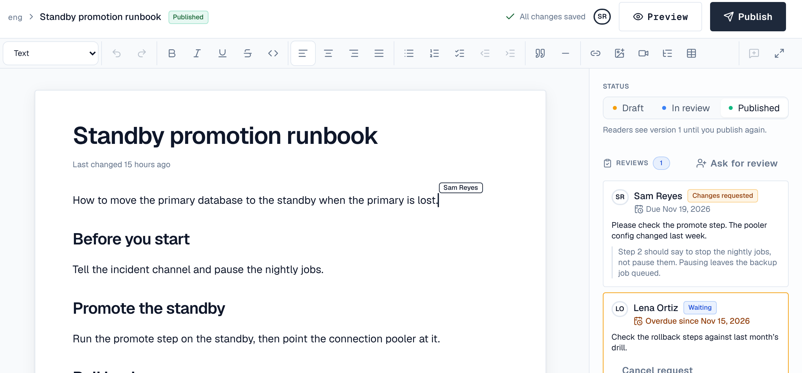

1. Overview
Everyone who edits a page works on the same draft at the same time. Changes appear for the others as you type, each person's cursor shows with their name, and nothing anyone writes overwrites someone else's work: changes made at the same moment are merged.

- The faces at the top of the editor, and Editing now in Page details, show who else has the page open.
- Undo takes back your own changes, not other people's.
- Restoring a version or a draft snapshot changes the draft for everyone, as one change.
2. Who can join
People with the space's Editor or Admin role, signed in in the browser. Readers never see the live draft: they see the published version until the next publish. If your access changes or your session ends while a page is open, editing stops within half a minute and the editor says why.
3. When the connection drops
You can keep typing. The editor says Offline. Your changes are kept in this tab and saved when the connection returns. When it returns, your changes are sent and merged with what others wrote meanwhile. Keep the tab open until it says All changes saved: changes not yet saved live only in that tab.
If the editor says live editing can't connect, the server's reverse proxy may not pass live connections on. Tell your administrator: the install guide has the setting.
4. Limits
A page's draft can hold a lot of content, but a single very large change, or a page that has reached its size limit, is refused: the editor stops and asks you to undo the last change or split the content into more pages.